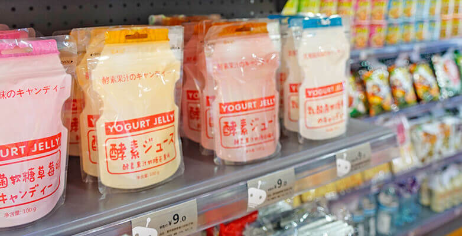
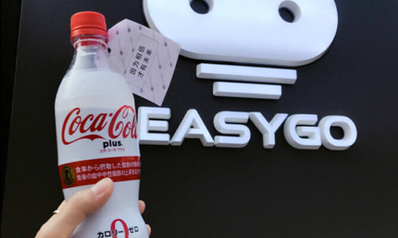
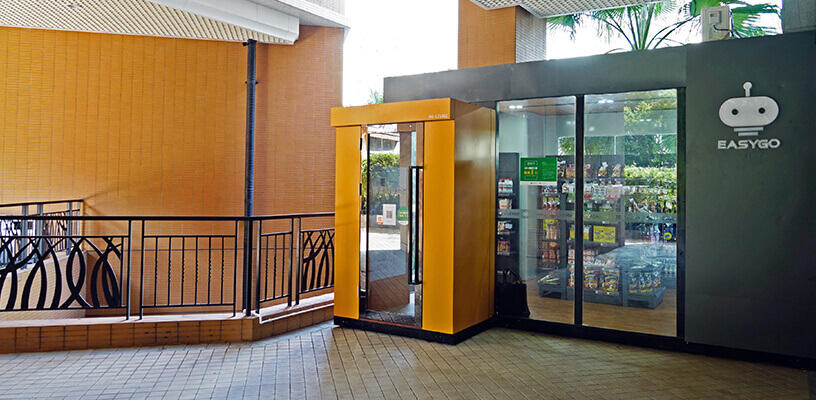

无人便利店「EasyGo」获时代地产集团数千万元战略投资
36氪获悉，此前报道过的无人值守新零售项目“EasyGo”已于近期获得来自时代地产集团（股票代码：1233.HK）数千万元战略投资。据悉，这笔融资将主要用于搭建数据后台、完善技术，以及快速拓店。
而这也是 EasyGo 未来便利店4个月内的第3次融资。2017 年 6 月，EasyGo 完成了 500 万元的种子轮融资，8月又获得来自浙江易坤创投和深圳永田的2000万元天使轮融资。

关于此次战略投资，EasyGo未来便利店联合创始人王牧牧表示，时代地产所有楼盘都将会对EasyGo独家开放，帮助加快EasyGo的铺设速度；其工程资源（地产的配套设施，譬如空调等）也会对接给EasyGo。
除了时代地产，EasyGo还与海伦堡地产等地产公司达成战略合作，并已进驻了万科地产、新世界地产、恒大地产、奥园地产等大型地产社区。据王牧牧透露，到本月底，EasyGo的铺设点位会达到10家。
数据方面，目前，EasyGo单店每天的流水在 2000 元左右，SKU 在 500 左右，客单价约20-25元，以标品售卖为主，店内 70% 的商品是进口商品，毛利约 35%，货损率约为3%。

目前，在稳步拓店之余，EasyGo也在采用自己数据和技术帮助传统零售商（例如逸臣书店）做技术改造，未来这有可能成为EasyGo的一种业务形态。
（此前，36氪已对EasyGo的选品选址策略，成本结构、供应链资源、运维模式、结算方案等做过具体介绍，在此不再具体展开。下面主要出阐述EasyGo背后的商业逻辑。）
今年下半年以来，在资本的推动下，无人便利店作为新零售的重要载体，正在打破线上线下的隔阂，渗入到国人的日常生活中。除EasyGo外，今年下半年出现的无人便利店还有淘咖啡、缤果盒子、F5未来便利店、零号元素、24爱便利店、EAT BOX、神奇屋等。
无人便利店一开始的噱头是“无人”，想着无人值守应该能够大大降低人力成本。但其实店铺值守人员的人力成本占整个店成本的10%-15%，在便利店里，收银员不仅仅是收钱，还负责往货架上摆货，盘点货物，进货等等这些其他工作。只要是有货架陈列商品的店铺，完全没有工作人员协助，在短期来看是不太现实的。
而消费者需要的也并非是“无人店”里炫酷的技术，而是在消费需求产生时，能以最方便快捷的方式拿到商品。
而满足上述条件的核心在于了解客户的动线，即客户走进店铺或者靠近货柜、货架，先看到什么，再看到什么。相应地，商品的摆放位置，展陈的方式就显得非常关键。在这一点上，无人便利店由于陈列的商品SKU不太多，在不同的区域做好选品，定期调整优化，才能进一步体现出便利性。
对此，王牧牧也认为，无人便利店的形式只是“表面功夫”，要让“商品真正符合用户的需求”，背后需要搭建全套的数据后台，沉淀用户和商品数据，从而知道消费者更喜欢什么东西，让供应商通过数据来对选品、货架摆放等进行自我调整。

王牧牧表示，这也是EasyGo未来在激烈的市场竞争中立足的根本。现阶段，EasyGo已通过构建用户消费数据平台，用户画像、店内热力图等，分析消费行为，形成一套具有深度学习、智能算法的新零售管理平台，通过数据分析快速调整商品结构。随着数据的不断积累，该平台也在不断优化。
据王牧牧介绍，年底EasyGo在广州的门店数量将增加至100家，完成标准化后，就会对外开放加盟，除了进驻深圳、珠三角的主要城市外，明年将会在全国5大重点区域进行高密度布局。待盒子铺得足够多后，依托于上述的管理平台，EasyGo 也会调整选品策略，使零售从过去供应商到消费着的单向模式，变成可交互的双向模式。
未来，EasyGo未来便利店将持续推进科技在无人便利店中的应用，除了RFID技术外，视觉识别、人脸识别等技术也将应用于EasyGo中。据悉，EasyGo便利店目前也在测试人脸识别技术，预计11月份落地。